- Si vienes de MacDiveQué archivo exportar y cómo cambiarte sin perder nada.
- Descargar de una computadoraShearwater y otras computadoras Bluetooth, o un cable en la Mac.
- Garmin DescentImporta archivos .fit del reloj o de Garmin Connect.
¿Algo no funciona? Consulta Solución de problemas. Thermocline es una bitácora: muestra lo que registró tu computadora de buceo y nunca calcula la descompresión.
Obtener la app
Thermocline es solo para dispositivos Apple: iPhone, iPad, Mac y Apple Watch. Durante la beta se instala con la app TestFlight de Apple.
| Tarea | iPhone y iPad | Mac |
|---|---|---|
| Unirte a la beta | Únete a la beta: un solo enlace para iPhone, iPad, Mac y Apple Watch. Ábrelo en cada dispositivo e instala desde TestFlight. La app para Apple Watch viene con la app para iPhone. Todos los dispositivos comparten la misma bitácora a través de iCloud. | |
| Te uniste a la beta para iPhone antes del 18 de noviembre de 2026 | Esa app se mudó. Consulta cambiarte desde la app anterior para iPhone. | |
| Mantenerla al día | Cuando TestFlight ofrezca una build nueva, actualiza todos los dispositivos que usas. Una build anterior deja de enviar cambios hasta que se actualiza, y lo indica. No se pierde nada. | |
Primer inicio y el recorrido
El primer inicio te pregunta tu nombre, tus unidades y de dónde vienen tus inmersiones. Las unidades se guardan en el sistema métrico; cambiarlas solo cambia cómo se muestran.
| Tarea | iPhone y iPad | Mac |
|---|---|---|
| Configuración | La pestaña Perfil | Thermocline → Configuración |
| El recorrido | Perfil → Ayuda → Mostrar el recorrido | Ayuda → Hacer el recorrido |
El recorrido pasa por cada pantalla con una bitácora de ejemplo, no con la tuya.
Las capturas de pantalla de esta página muestran la bitácora de ejemplo del recorrido: las inmersiones y los sitios son inventados. Toca una para verla en tamaño completo.

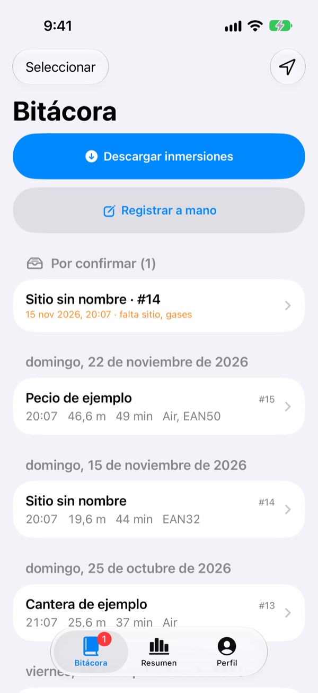
Trae tu bitácora
Thermocline lee MacDive (su carpeta, XML o UDDF), una base de datos de Shearwater Cloud, archivos .fit de Garmin, UDDF de cualquier bitácora y CSV. Tú eliges qué inmersiones agregar, y todo lo que no puede leer aparece en una lista, nunca se descarta en silencio.
| Tarea | iPhone y iPad | Mac |
|---|---|---|
| Importar un archivo | Perfil → Tus datos → Importar un archivo de bitácora y luego elígelo en iCloud Drive o Archivos. | El comando de importar del menú Archivo (⇧⌘I). |
| Archivos .fit de Garmin | Selecciona varios a la vez. | Selecciona varios, o una carpeta completa. |
| La carpeta de MacDive, con fotos | Solo en la Mac. Trae las fotos más tarde con la app para Mac. | Archivo → Importar desde MacDive… y elige la carpeta de MacDive: inmersiones, fotos de inmersiones y fotos de tarjetas. Los archivos de MacDive no se modifican. |
| Elegir las inmersiones | Desmarca las que no quieras y luego Importar. | |
| Deshacer una importación | El punto de restauración Antes de una importación, que se guarda antes de cualquier importación de más de una inmersión. | Deshacer importación… en el informe de importación, o el mismo punto de restauración. |
Cuando termina la importación, un informe muestra cuántas inmersiones se agregaron, qué elementos quedaron como No importada y por qué, y lo que hay que revisar. Las inmersiones cuyo archivo no tenía gas esperan en Por confirmar.
Qué archivo de MacDive usar
MacDive puede darte su XML, su UDDF o (en la Mac) su carpeta completa. No contienen lo mismo:
| Qué contiene | MacDive XML | MacDive UDDF | Carpeta de MacDive (Mac) |
|---|---|---|---|
| Inmersiones, sitios, compañeros, gases | Sí | Sí | Sí |
| Tamaños de tanque | Sí | No: sus tamaños no son capacidades en agua, así que se dejan en blanco | Sí |
| Perfiles de profundidad | Todas las inmersiones | Todas las inmersiones | Todas menos las inmersiones que MacDive descargó en iPhone o iPad, que guarda cifradas |
| El NDL y la ppO₂ de la computadora a lo largo de la inmersión | Sí | No | Sí, excepto esas inmersiones cifradas |
| El CNS de la computadora | Sí | No | Sí |
| Equipo, etiquetas y tipos de inmersión | Sí | No | Sí |
| Fotos de inmersiones y de tarjetas | No | No | Sí |
| Tarea | iPhone y iPad | Mac |
|---|---|---|
| La mejor ruta | Exporta tus inmersiones desde MacDive como XML, guarda el archivo en iCloud Drive e impórtalo. | Importa la carpeta de MacDive y luego el XML encima. El XML completa los perfiles, el NDL y la ppO₂ de las inmersiones cifradas. |
| Ya importaste el UDDF | Importa también el XML. Las inmersiones que ya están en tu bitácora se emparejan, no se vuelven a agregar, y solo se completa lo que falta, incluidos los tamaños de tanque. No se cambia nada de lo que hayas ingresado o corregido. | |
Relojes Garmin Descent
Un Garmin Descent guarda un archivo .fit por inmersión. Hay dos formas de obtenerlos:
- Desde el reloj: conéctalo a la Mac con su cable y abre la carpeta GARMIN → Activity. En la Mac puedes importar toda la carpeta GARMIN; los archivos que no son inmersiones, como carreras y ajustes, se omiten.
- Desde Garmin Connect: abre la inmersión y elige Exportar original. Eso te da un .zip: descomprímelo primero y luego importa el archivo .fit que contiene.
Las posiciones vienen del GPS del reloj. En una deriva, el reloj guarda como inicio el lugar donde saliste a la superficie; la importación encuentra dónde entraste en realidad, así que la inmersión se empareja con ese sitio. Agrega a las notas cualquier otro pecio por el que hayas pasado.

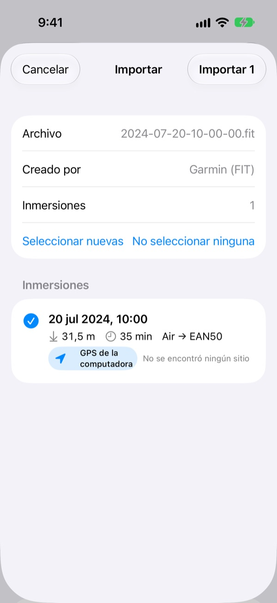
Descargar inmersiones de tu computadora
Primero pon la computadora de buceo en su modo Bluetooth. En una Shearwater: Menu → Bluetooth. Se queda así unos dos minutos. Solo se traen las inmersiones más nuevas que tu última descarga.
| Tarea | iPhone y iPad | Mac |
|---|---|---|
| Abrir | Bitácora → Descargar inmersiones | Archivo → Descargar de la computadora de buceo… (⇧⌘D) |
| Conectar | Bluetooth. Elige tu computadora en Cerca; la primera vez, escribe el PIN que aparece en su pantalla. | Elige Bluetooth o Cable USB. Para un cable, elige el modelo de tu computadora y su puerto, y sigue Antes de empezar. |
| Terminar | Desmarca las inmersiones que no quieras y luego Conservar. Las inmersiones desmarcadas se quedan en la computadora y se ofrecen de nuevo la próxima vez. | Descargar. |
La pregunta del reloj. La primera descarga de cada computadora pregunta ¿En qué zona está el reloj de la computadora? La mayoría de las computadoras registran la hora local sin zona horaria, así que esto mantiene correctas las horas de tus inmersiones cuando viajas. La respuesta se recuerda para esa computadora.
Después de elegir las inmersiones, puedes recorrerlas una por una para indicar el sitio y los gases, o Terminar más tarde: esperan en Por confirmar.
¿Eliminaste una inmersión y la quieres de vuelta? Activa Descargar todas las inmersiones de la computadora. Tarda más; las inmersiones que ya están en tu bitácora se omiten.

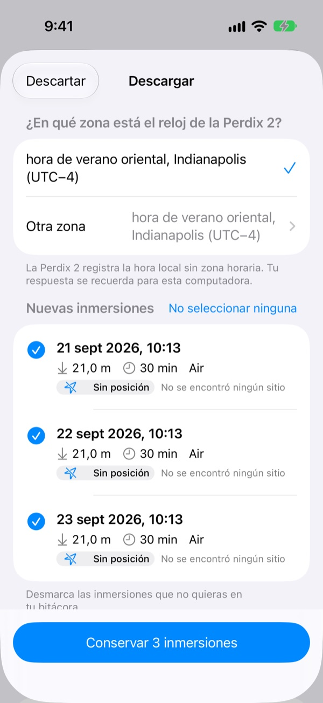
Shearwater Predator y Petrel 1
Usan un Bluetooth antiguo (Bluetooth Classic) que el iPhone y el iPad no pueden usar. En la Mac, primero enlaza la computadora en Configuración del Sistema → Bluetooth y luego elige Cable USB en la ventana de descarga: su puerto puede aparecer en la lista. Pon la computadora en su modo de transferencia Bluetooth y elige Descargar. Esto todavía no se ha probado con una Predator o una Petrel 1 reales, así que por favor envía el registro de descarga, funcione o no. En el iPhone, importa sus inmersiones desde Shearwater Cloud o un archivo UDDF.
Computadoras compatibles
Thermocline descarga con libdivecomputer, la biblioteca de código abierto que comparten muchas bitácoras. Conoce varios cientos de modelos de la mayoría de los fabricantes. Para ver la tuya, abre la pantalla de descarga y elige Computadoras compatibles; cada una indica si funciona en iPhone y iPad o si necesita la Mac.
| Conexión | Dónde funciona | Probado hasta ahora |
|---|---|---|
| Bluetooth LE | iPhone, iPad y Mac | Shearwater Perdix y Perdix 2. Otros modelos deberían funcionar: cuéntanos. |
| Cable USB o serie | Solo en la Mac | Hecho, todavía sin probar con hardware real. |
| Bluetooth Classic (Predator, Petrel 1 y otros modelos antiguos) | Solo en la Mac, enlazada como puerto serie (cómo) | Todavía sin probar. |
| Garmin Descent (archivos .fit) | Importación en iPhone, iPad y Mac (cómo) | Inmersiones de Descent, incluidas las de deriva. |
¿Tienes una computadora que no hemos probado? Ayúdanos a probarla.
Confirmar sitio y gases
Las inmersiones a las que todavía les falta un sitio o gases confirmados esperan en Por confirmar. Nada impide que se guarden; complétalas cuando quieras.
| Tarea | iPhone y iPad | Mac |
|---|---|---|
| Encontrarlas | Arriba en Bitácora, en Por confirmar. | Ir → Por confirmar (⌘2) |
| Confirmar | Abre una, luego Elegir un sitio y toca Sí, estos gases son correctos (o Corregir gas…). | El aviso de cada inmersión ofrece Confirmar sitio y gases…, Elegir sitio… o Confirmar gases…. |
Thermocline sugiere el sitio a partir de la posición de la inmersión: primero tus propios sitios, luego las listas integradas de más de 76,000 puntos de inmersión y pecios, que funcionan sin conexión.

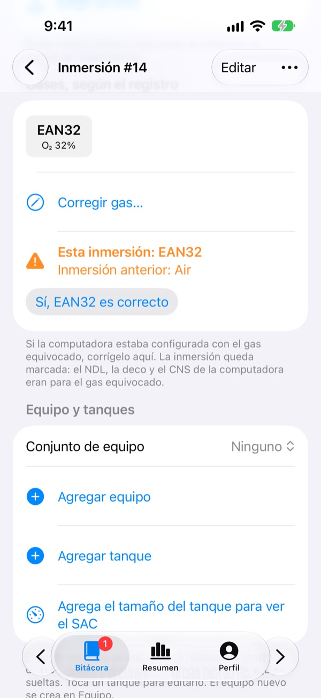
Leer una inmersión
| Tarea | iPhone y iPad | Mac |
|---|---|---|
| Leer cualquier momento | Arrastra a lo largo de la gráfica. | Apunta a la gráfica. |
| Registrar una inmersión a mano | Bitácora → Registrar a mano | ⌘N |
- Los valores de seguridad están en una franja fija en la parte superior de cada inmersión, siempre en el mismo lugar.
- El perfil: los botones bajo la gráfica muestran u ocultan Tanque, ppO₂, NDL, SAC, Temp., CNS y Ascenso, en franjas (Apilado) o en una sola gráfica (Superpuesto). Solo lo que registró la inmersión tiene botón. El NDL es el de la computadora y se detiene durante la deco, donde la banda roja muestra las paradas. En un iPhone estrecho los botones se quedan en una sola línea y se desplazan hacia los lados. Pruébalo en la página de inicio.
- Rebreathers: desde cualquier computadora o archivo que los registre, la franja de ppO₂ muestra el setpoint con la ppO₂ votada (y cada celda, cuando se registra), y la lectura da el setpoint en ese momento. Un cambio del diluyente a cualquier otro gas se marca como bailout.
- Consumo de gas: toca o haz clic en ¿Cómo? junto a la cifra de SAC para ver cada dato: el tanque, su capacidad en agua, las presiones, la temperatura y la corrección de gas real.
- Edición: edita cualquier inmersión. Una corrección conserva la lectura original de la computadora.
- Lastre: el primer toque en + indica Sin lastre, para una inmersión sin lastre. Toca − desde ahí para borrarlo.
- Enlaces en las notas: los enlaces web en las notas de una inmersión se pueden tocar o hacer clic. Cuando termines de escribir, toca OK sobre el teclado: entonces se muestran los enlaces, y un enlace de YouTube o Vimeo tiene un botón Agregar … a los enlaces de video debajo de las notas. Para volver a escribir en las notas, elige Editar notas.


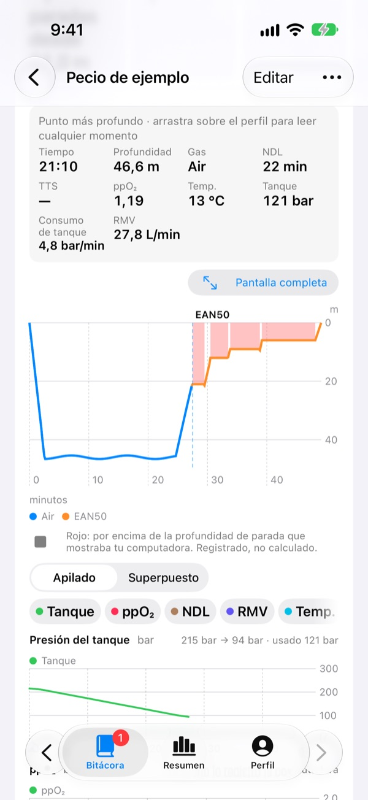


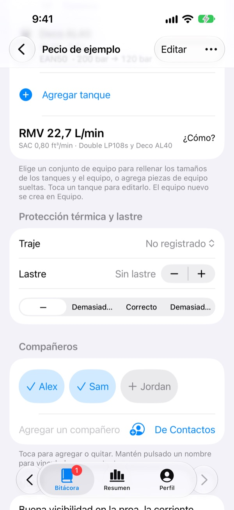

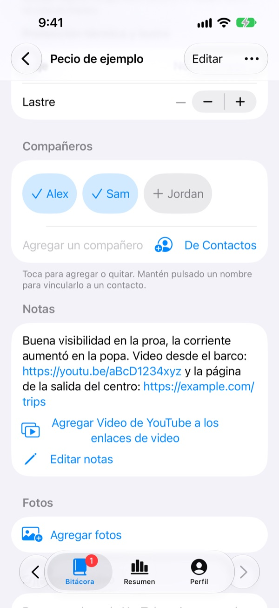

Sitios, posiciones y el Apple Watch
| Tarea | iPhone y iPad | Mac |
|---|---|---|
| Agregar un sitio | Perfil → Sitios y luego el botón de agregar: Buscar o nombrar un sitio o Marcar lugar aquí (GPS). | Ir → Sitios (⌘4) y luego Agregar sitio… |
| Ver todos los sitios de las listas | Perfil → Sitios → Mapa y luego el botón del globo, o pellizca hasta alejar del todo. Los pecios son naranjas, los arrecifes y puntos de inmersión azules, y tus propios sitios banderas rojas. | Sitios y luego Mostrar globo terráqueo en la barra de herramientas, o aleja el zoom del todo. |
| Buscar una posición | Un sitio sin posición ofrece Buscar posición: revisa la sugerencia en el mapa, escribe las coordenadas o coloca un pin. | Buscar posiciones… recorre todos los sitios sin posición, uno por uno. |
Apple Watch: marca un lugar en la superficie y queda esperando en tu iPhone en Por confirmar. Consulta Apple Watch.
Las posiciones de los sitios son para registrar, no para navegar.

Apple Watch
La app para Watch hace una sola cosa: marca dónde estás en la superficie, para que sea fácil registrar el sitio de una inmersión. No registra inmersiones; esas vienen de tu computadora de buceo. Necesita watchOS 11 o posterior y un iPhone con Thermocline.
| Tarea | Apple Watch | iPhone |
|---|---|---|
| Instalar | Viene con la app para iPhone. Si no está en el reloj, abre la app Watch en tu iPhone, busca Thermocline en Apps disponibles y toca Instalar. La primera vez, permite el acceso a la ubicación para Thermocline en el reloj. | |
| Marcar un lugar | En la superficie, sobre el sitio, abre Thermocline. Espera a Buena posición y luego toca Marcar lugar. El reloj da un toque en tu muñeca cuando se guarda. | El lugar llega solo. Si el iPhone está fuera de alcance, se envía cuando vuelven a estar juntos. |
| Ponerle nombre | Opcional. Toca Agregar un nombre después de marcar, o más tarde en Marcaciones, y dilo, escríbelo a mano o tecléalo, por ejemplo «proa del pecio». Se guarda cuando terminas. | El nombre se ofrece como nombre del nuevo sitio. Puedes usarlo o elegir otro sitio. |
| Confirmarlo | No hay nada que hacer en el reloj. | Bitácora → Por confirmar. El iPhone busca el lugar cuando tiene conexión, sugiere el sitio conocido más cercano y muestra la inmersión a la que más probablemente pertenece. Confírmalo o descártalo. |
| Comprobar que se envió | Marcaciones muestra cada uno con Enviado al iPhone o Esperando para enviar al iPhone, y un mapa. Un lugar sale del reloj una vez que se confirma o se descarta en el iPhone. | Una vez confirmado, el sitio se sincroniza con tus otros dispositivos como cualquier otro. |

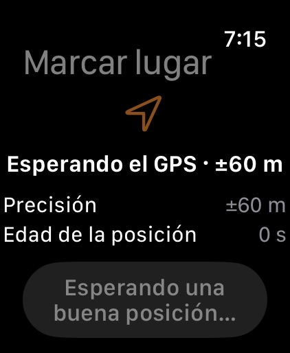

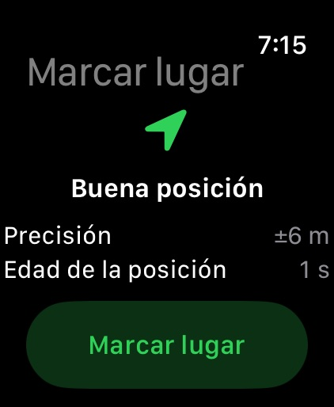

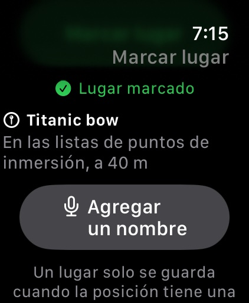

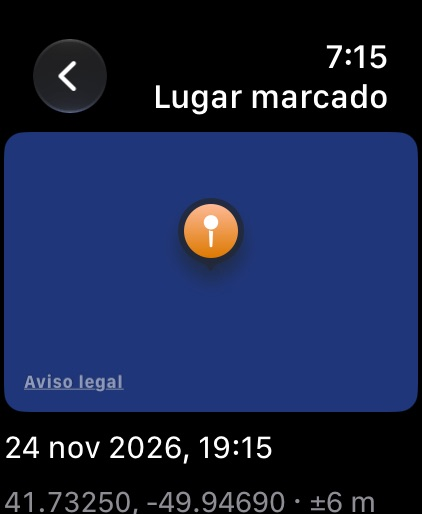
El reloj guarda un lugar solo a partir de una posición dentro de ±30 m y con menos de 30 segundos de antigüedad, e ignora una posición antigua en caché. Márcalo en la superficie, no bajo el agua.
Las posiciones de los sitios son para registrar, no para navegar.
Equipo y tanques
| Tarea | iPhone y iPad | Mac |
|---|---|---|
| Abrir Equipo | Perfil → Equipo | Ir → Equipo |
- En un tanque, Modelo abre el catálogo de tanques: busca por fabricante o modelo (por ejemplo «PST LP104») para completar sus tamaños publicados, o escribe tus propios números.
- Marca Doble tanque (par con manifold) para dos tanques unidos con manifold.
- Un tanque de acero con un + estampado: activa Marcado plus mientras la última prueba hidrostática haya conservado el +. Se muestra, por ejemplo, como 2400+. Este interruptor aparece cuando los tamaños de tanque se muestran en pies cúbicos.
- Los tanques de cada inmersión están en la sección de gas de la inmersión (Agregar tanque, Conjunto de equipo).
Fusionar y unir inmersiones
- Fusionar es para una inmersión registrada por dos computadoras. Se conservan las dos grabaciones y puedes cambiar entre ellas en la gráfica.
- Unir es para una inmersión dividida en dos por un breve ascenso a la superficie.
- Thermocline nunca hace ninguna de las dos cosas por su cuenta. Cuando detecta un par probable, un aviso en la parte superior de la bitácora te ofrece Revisar las dos.
| Tarea | iPhone y iPad | Mac |
|---|---|---|
| Hacerlo tú mismo | Toca Seleccionar, elige dos inmersiones y luego Fusionar o Unir. | Selecciona dos inmersiones y haz clic derecho: Fusionar estas inmersiones… o Unir estas inmersiones… |
| Cambiaste de opinión | Deshacer de inmediato, o Separar estas inmersiones en la inmersión en cualquier momento. | |
Fotos y enlaces de video
- Agregar fotos en una inmersión las copia de tu biblioteca a la bitácora.
- Para ahorrar espacio de iCloud, activa Sincronización → Ahorrar espacio de iCloud en las fotos de inmersión en todos los dispositivos. Así las fotos se vinculan a Fotos en iCloud en lugar de copiarse, y se pueden agregar videos de tu biblioteca. Thermocline pide acceso a Fotos solo cuando activas esto.
- Enlaces de video: pega un enlace de YouTube o Vimeo debajo de las fotos de una inmersión. Solo se guarda el enlace. Un enlace que ya está en las notas se puede agregar desde ahí (consulta Leer una inmersión).
- El mismo video en varias inmersiones: selecciona las inmersiones (en el iPhone, toca Seleccionar primero), elige Editar … inmersiones… y agrega el enlace en Enlaces de video. Se agrega a cada inmersión seleccionada, y se conservan los enlaces que ya tienen.
Resumen y consumo de gas
La pestaña Resumen (Resumen en la barra lateral de la Mac) hace las cuentas de tu bitácora: inmersiones por año y por mes, profundidades, gases, récords, dónde buceas y tu sitio y compañero más usados. Elige un periodo arriba, por ejemplo un año, y toca cualquier número o barra para ver las inmersiones que hay detrás.
- Respiración muestra tu SAC y tu RMV en todas las inmersiones del periodo que tienen tamaño de tanque y presiones inicial y final, ponderados por tiempo y profundidad. Tócalo para ver qué inmersiones se contaron.
- Algunas inmersiones importadas no tienen tamaño de tanque, así que Respiración puede estar vacía al principio (consulta Qué archivo de MacDive usar). Indica los tanques en tus inmersiones, en Equipo o en cada inmersión, y se completa.

Sincronizar con iCloud
| Tarea | iPhone y iPad | Mac |
|---|---|---|
| Activar la sincronización | Perfil → Sincronización | Thermocline → Configuración → Sincronización |
Así, todos los dispositivos con sesión iniciada en la misma Cuenta de Apple comparten una sola bitácora, guardada en tu propio iCloud privado. Los cambios hechos sin conexión esperan en el dispositivo y se envían cuando vuelve a tener conexión.
La sección Sincronización muestra el estado, lo que está Pendiente de enviar y si este dispositivo y los demás coinciden. Sincronizar ahora comprueba de inmediato.

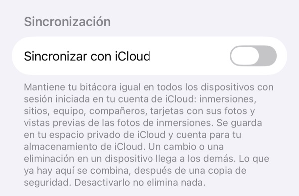
Exportar, puntos de restauración y borrar
| Tarea | iPhone y iPad | Mac |
|---|---|---|
| Exportar | Perfil → Tus datos | El menú Archivo |
| Puntos de restauración | Perfil → Tus datos → Puntos de restauración | Configuración → Tus datos → Puntos de restauración |
- Exportar: UDDF es la exportación completa y tu salida hacia cualquier bitácora. También hay: una hoja de cálculo (CSV), MacDive XML, marcadores para topografía de cuevas (CSV) y un resumen de experiencia (texto) para los requisitos previos de cursos.
- Puntos de restauración: se guarda uno antes de activar la sincronización, antes de una importación grande, una fusión, una unión, un borrado y antes de eliminar cualquier cosa. Restaurar guarda primero tu bitácora actual como punto de restauración, así que puedes deshacerlo.
- Borrar: Borrar bitácora… te ofrece exportar primero. Con la sincronización activada, tus otros dispositivos hacen lo mismo.

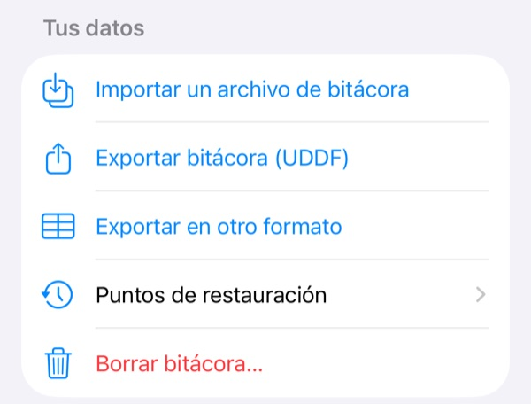
¿Sigues atascado?
Consulta Solución de problemas, o envía comentarios desde TestFlight o a brian@616labs.net.